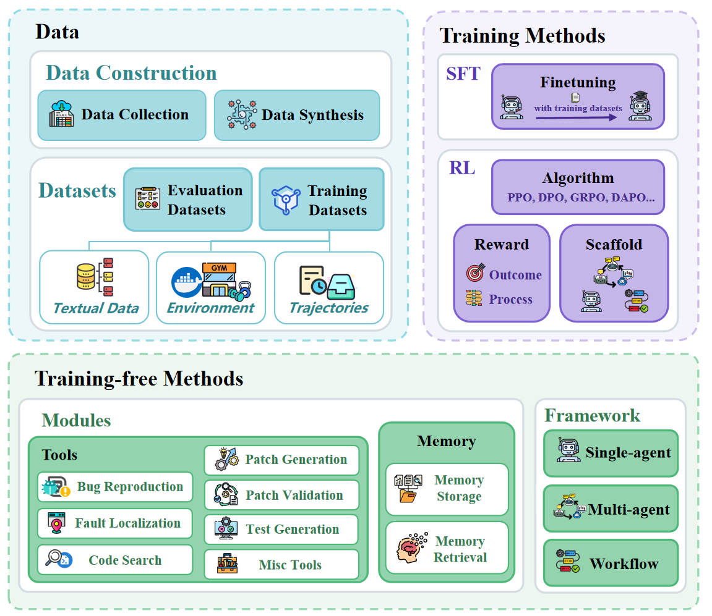

✨ Awesome Issue Resolution¶
✨ Awesome Issue Resolution
Advances, Frontiers, and Future of Issue Resolution in Software Engineering: A Comprehensive Survey


📖 Abstract¶
Based on a systematic review of 135 publications, this survey establishes a holistic theoretical framework for Issue Resolution in software engineering. We examine how Large Language Models (LLMs) are transforming the automation of GitHub issue resolution. Beyond the theoretical analysis, we have curated a comprehensive collection of datasets and model training resources, which are continuously synchronized with our GitHub repository and project documentation website.
🔍 Explore This Survey:
- 📊 Data: Evaluation and training datasets, data collection and synthesis methods
- 🛠️ Methods: Training-free (agent/workflow) and training-based (SFT/RL) approaches
- 🔍 Analysis: Insights into both data characteristics and method performance
- 📋 Tables & Resources: Comprehensive statistical tables and resources
- 📄 Full Paper: Read the complete survey paper

📊 Data¶
This section covers the datasets used for evaluation and training, as well as methods for data construction.
Evaluation Datasets¶
- SWE-bench: SWE-bench: Can Language Models Resolve Real-World GitHub Issues? (2024)
- SWE-bench Lite: SWE-bench: Can Language Models Resolve Real-World GitHub Issues? (2024)
- SWE-bench Verified: Introducing SWE-bench Verified | OpenAI (2024)
- SWE-bench-java: SWE-bench-java: A GitHub Issue Resolving Benchmark for Java (2024)
- Visual SWE-bench: CodeV: Issue Resolving with Visual Data (2025)
- SWE-Lancer: SWE-Lancer: Can Frontier LLMs Earn \1 Million from Real-World Freelance Software Engineering? (2025)
- Multi-SWE-bench: Multi-SWE-bench: A Multilingual Benchmark for Issue Resolving (2025)
- SWE-PolyBench: SWE-PolyBench: A multi-language benchmark for repository level evaluation of coding agents (2025)
- SWE-bench Multilingual: SWE-smith: Scaling Data for Software Engineering Agents (2025)
- SwingArena: SwingArena: Competitive Programming Arena for Long-context GitHub Issue Solving (2025)
- SWE-bench Multimodal: SWE-bench Multimodal: Do AI Systems Generalize to Visual Software Domains? (2024)
- OmniGIRL: OmniGIRL: A Multilingual and Multimodal Benchmark for GitHub Issue Resolution (2025)
- SWE-bench-Live: SWE-bench Goes Live! (2025)
- SWE-Factory: SWE-Factory: Your Automated Factory for Issue Resolution Training Data and Evaluation Benchmarks (2025)
- SWE-MERA: SWE-MERA: A Dynamic Benchmark for Agenticly Evaluating Large Language Models on Software Engineering Tasks (2025)
- SWE-Perf: SWE-Perf: Can Language Models Optimize Code Performance on Real-World Repositories? (2025)
- SWE-Bench Pro: SWE-Bench Pro: Can AI Agents Solve Long-Horizon Software Engineering Tasks? (2025)
- SWE-InfraBench: SWE-InfraBench: Evaluating Language Models on Cloud Infrastructure Code (2025)
- SWE-Sharp-Bench: SWE-Sharp-Bench: A Reproducible Benchmark for C# Software Engineering Tasks (2025)
- SWE-fficiency: SWE-fficiency: Can Language Models Optimize Real-World Repositories on Real Workloads? (2025)
- SWE-Compass: SWE-Compass: Towards Unified Evaluation of Agentic Coding Abilities for Large Language Models (2025)
- SWE-Bench++: SWE-Bench++: A Framework for the Scalable Generation of Software Engineering Benchmarks from Open-Source Repositories (2025)
- SWE-EVO: SWE-EVO: Benchmarking Coding Agents in Long-Horizon Software Evolution Scenarios (2025)
Training Datasets¶
- SWE-bench-train: SWE-bench: Can Language Models Resolve Real-World GitHub Issues? (2024)
- SWE-bench-extra: SWE-bench: Can Language Models Resolve Real-World GitHub Issues? (2024)
- Multi-SWE-RL: Multi-SWE-bench: A Multilingual Benchmark for Issue Resolving (2025)
- R2E-Gym: R2E-Gym: Procedural Environments and Hybrid Verifiers for Scaling Open-Weights SWE Agents (2025)
- SWE-Synth: SWE-Synth: Synthesizing Verifiable Bug-Fix Data to Enable Large Language Models in Resolving Real-World Bugs (2025)
- LocAgent: OrcaLoca: An LLM Agent Framework for Software Issue Localization (2025)
- SWE-Smith: SWE-smith: Scaling Data for Software Engineering Agents (2025)
- SWE-Fixer: SWE-Fixer: Training Open-Source LLMs for Effective and Efficient GitHub Issue Resolution (2025)
- SWELoc: SweRank: Software Issue Localization with Code Ranking (2025)
- SWE-Gym: Training Software Engineering Agents and Verifiers with SWE-Gym (2025)
- SWE-Flow: SWE-Flow: Synthesizing Software Engineering Data in a Test-Driven Manner (2025)
- SWE-Factory: SWE-Factory: Your Automated Factory for Issue Resolution Training Data and Evaluation Benchmarks (2025)
- Skywork-SWE: Skywork-SWE: Unveiling Data Scaling Laws for Software Engineering in LLMs (2025)
- RepoForge: RepoForge: Training a SOTA Fast-thinking SWE Agent with an End-to-End Data Curation Pipeline Synergizing SFT and RL at Scale (2025)
- SWE-Mirror: SWE-Mirror: Scaling Issue-Resolving Datasets by Mirroring Issues Across Repositories (2025)
- SWE-Bench++: SWE-Bench++: A Framework for the Scalable Generation of Software Engineering Benchmarks from Open-Source Repositories (2025)
Data Collection¶
- SWE-rebench: SWE-rebench: An Automated Pipeline for Task Collection and Decontaminated Evaluation of Software Engineering Agents (2025)
- RepoLaunch: SWE-bench Goes Live! (2025)
- SWE-Factory: SWE-Factory: Your Automated Factory for Issue Resolution Training Data and Evaluation Benchmarks (2025)
- SWE-MERA: SWE-MERA: A Dynamic Benchmark for Agenticly Evaluating Large Language Models on Software Engineering Tasks (2025)
- RepoForge: RepoForge: Training a SOTA Fast-thinking SWE Agent with an End-to-End Data Curation Pipeline Synergizing SFT and RL at Scale (2025)
- Multi-Docker-Eval: Multi-Docker-Eval: A `Shovel of the Gold Rush' Benchmark on Automatic Environment Building for Software Engineering (2025)
Data Synthesis¶
- Learn-by-interact: Learn-by-interact: A Data-Centric Framework For Self-Adaptive Agents in Realistic Environments (2025)
- R2E-Gym: R2E-Gym: Procedural Environments and Hybrid Verifiers for Scaling Open-Weights SWE Agents (2025)
- SWE-Synth: SWE-Synth: Synthesizing Verifiable Bug-Fix Data to Enable Large Language Models in Resolving Real-World Bugs (2025)
- SWE-smith: SWE-smith: Scaling Data for Software Engineering Agents (2025)
- SWE-Flow: SWE-Flow: Synthesizing Software Engineering Data in a Test-Driven Manner (2025)
- SWE-Mirror: SWE-Mirror: Scaling Issue-Resolving Datasets by Mirroring Issues Across Repositories (2025)
🛠️ Methods¶
This section covers both training-free and training-based methods for issue resolution.
🧑💻 Training-free Methods¶
Single-Agent¶
- SWE-agent: SWE-agent: Agent-Computer Interfaces Enable Automated Software Engineering (2024)
- PatchPilot: PatchPilot: A Cost-Efficient Software Engineering Agent with Early Attempts on Formal Verification (2025)
- LCLM: Putting It All into Context: Simplifying Agents with LCLMs (2025)
- DGM: Darwin Godel Machine: Open-Ended Evolution of Self-Improving Agents (2025)
- SE-Agent: SE-Agent: Self-Evolution Trajectory Optimization in Multi-Step Reasoning with LLM-Based Agents (2025)
- TOM-SWE: TOM-SWE: User Mental Modeling For Software Engineering Agents (2025)
- Live-SWE-agent: SE-Agent: Self-Evolution Trajectory Optimization in Multi-Step Reasoning with LLM-Based Agents (2025)
Multi-Agent¶
- MAGIS: MAGIS: LLM-Based Multi-Agent Framework for GitHub Issue Resolution (2024)
- AutoCodeRover: AutoCodeRover: Autonomous Program Improvement (2024)
- CodeR: CodeR: Issue Resolving with Multi-Agent and Task Graphs (2024)
- OpenHands: OpenHands: An Open Platform for AI Software Developers as Generalist Agents (2025)
- OrcaLora: OrcaLoca: An LLM Agent Framework for Software Issue Localization (2025)
- DEI: Diversity Empowers Intelligence: Integrating Expertise of Software Engineering Agents (2024)
- MarsCode Agent: MarsCode Agent: AI-native Automated Bug Fixing (2024)
- SWE-Search: SWE-Search: Enhancing Software Agents with Monte Carlo Tree Search and Iterative Refinement (2025)
- CodeCoR: CodeCoR: An LLM-Based Self-Reflective Multi-Agent Framework for Code Generation (2025)
- Agent KB: Agent KB: Leveraging Cross-Domain Experience for Agentic Problem Solving (2025)
- SWE-Debate: SWE-Debate: Competitive Multi-Agent Debate for Software Issue Resolution (2025)
- SWE-Exp: SWE-Exp: Experience-Driven Software Issue Resolution (2025)
- Trae Agent: Trae Agent: An LLM-based Agent for Software Engineering with Test-time Scaling (2025)
- Meta-RAG: Meta-RAG on Large Codebases Using Code Summarization (2025)
Workflow¶
- Agentless: Agentless: Demystifying LLM-based Software Engineering Agents (2024)
- Conversational Pipeline: Exploring the Potential of Conversational Test Suite Based Program Repair on SWE-bench (2024)
- SynFix: SynFix: Dependency-Aware Program Repair via RelationGraph Analysis (2025)
- CodeV: CodeV: Issue Resolving with Visual Data (2025)
- GUIRepair: Seeing is Fixing: Cross-Modal Reasoning with Multimodal LLMs for Visual Software Issue Fixing (2025)
Tool¶
- MAGIS: MAGIS: LLM-Based Multi-Agent Framework for GitHub Issue Resolution (2024)
- AutoCodeRover: AutoCodeRover: Autonomous Program Improvement (2024)
- SWE-agent: SWE-agent: Agent-Computer Interfaces Enable Automated Software Engineering (2024)
- Alibaba LingmaAgent: Alibaba LingmaAgent: Improving Automated Issue Resolution via Comprehensive Repository Exploration (2025)
- OpenHands: OpenHands: An Open Platform for AI Software Developers as Generalist Agents (2025)
- SpecRover: SpecRover: Code Intent Extraction via LLMs (2025)
- MarsCode Agent: MarsCode Agent: AI-native Automated Bug Fixing (2024)
- RepoGraph: RepoGraph: Enhancing AI Software Engineering with Repository-level Code Graph (2025)
- SuperCoder2.0: SuperCoder2.0: Technical Report on Exploring the feasibility of LLMs as Autonomous Programmer (2024)
- EvoCoder: LLMs as Continuous Learners: Improving the Reproduction of Defective Code in Software Issues (2024)
- AEGIS: AEGIS: An Agent-based Framework for General Bug Reproduction from Issue Descriptions (2024)
- OrcaLoca: OrcaLoca: An LLM Agent Framework for Software Issue Localization (2025)
- Otter: Otter: Generating Tests from Issues to Validate SWE Patches (2025)
- CoRNStack: CoRNStack: High-Quality Contrastive Data for Better Code Retrieval and Reranking (2025)
- Issue2Test: Issue2Test: Generating Reproducing Test Cases from Issue Reports (2025)
- KGCompass: Enhancing repository-level software repair via repository-aware knowledge graphs (2025)
- CoSIL: Issue Localization via LLM-Driven Iterative Code Graph Searching (2025)
- InfantAgent-Next: InfantAgent-Next: A Multimodal Generalist Agent for Automated Computer Interaction (2025)
- Co-PatcheR: Co-PatcheR: Collaborative Software Patching with Component(s)-specific Small Reasoning Models (2025)
- SWERank: SweRank: Software Issue Localization with Code Ranking (2025)
- Nemotron-CORTEXA: Nemotron-CORTEXA: Enhancing LLM Agents for Software Engineering Tasks via Improved Localization and Solution Diversity (2025)
- LCLM: Putting It All into Context: Simplifying Agents with LCLMs (2025)
- SACL: SACL: Understanding and Combating Textual Bias in Code Retrieval with Semantic-Augmented Reranking and Localization (2025)
- SWE-Debate: SWE-Debate: Competitive Multi-Agent Debate for Software Issue Resolution (2025)
- OpenHands-Versa: Coding Agents with Multimodal Browsing are Generalist Problem Solvers (2025)
- Repeton: Repeton: Structured Bug Repair with ReAct-Guided Patch-and-Test Cycles (2025)
- cAST: cAST: Enhancing Code Retrieval-Augmented Generation with Structural Chunking via Abstract Syntax Tree (2025)
- Prometheus: Prometheus: Unified Knowledge Graphs for Issue Resolution in Multilingual Codebases (2025)
- Git Context Controller: Git Context Controller: Manage the Context of LLM-based Agents like Git (2025)
- Trae Agent: Trae Agent: An LLM-based Agent for Software Engineering with Test-time Scaling (2025)
- TestPrune: When Old Meets New: Evaluating the Impact of Regression Tests on SWE Issue Resolution (2025)
- e-Otter++: Execution-Feedback Driven Test Generation from SWE Issues (2025)
- Meta-RAG: Meta-RAG on Large Codebases Using Code Summarization (2025)
Memory¶
- Infant Agent: Infant Agent: A Tool-Integrated, Logic-Driven Agent with Cost-Effective API Usage (2024)
- EvoCoder: LLMs as Continuous Learners: Improving the Reproduction of Defective Code in Software Issues (2024)
- Learn-by-interact: Learn-by-interact: A Data-Centric Framework For Self-Adaptive Agents in Realistic Environments (2025)
- DGM: Darwin Godel Machine: Open-Ended Evolution of Self-Improving Agents (2025)
- ExpeRepair: EXPEREPAIR: Dual-Memory Enhanced LLM-based Repository-Level Program Repair (2025)
- Agent KB: Agent KB: Leveraging Cross-Domain Experience for Agentic Problem Solving (2025)
- SWE-Exp: SWE-Exp: Experience-Driven Software Issue Resolution (2025)
- RepoMem: Improving Code Localization with Repository Memory (2025)
- ReasoningBank: ReasoningBank: Scaling Agent Self-Evolving with Reasoning Memory (2025)
Inference-time Scaling¶
- SWE-Search: SWE-Search: Enhancing Software Agents with Monte Carlo Tree Search and Iterative Refinement (2025)
- CodeMonkeys: CodeMonkeys: Scaling Test-Time Compute for Software Engineering (2025)
- SWE-PRM: When Agents go Astray: Course-Correcting SWE Agents with PRMs (2025)
- ReasoningBank: CodeMonkeys: Scaling Test-Time Compute for Software Engineering (2025)
🧠 Training-based Methods¶
SFT-based Methods¶
- Lingma SWE-GPT: Lingma SWE-GPT: An Open Development-Process-Centric Language Model for Automated Software Improvement (2024)
- Scaling data collection: Scaling Data Collection for Training SWE Agents (2024)
- CodeXEmbed: CodeXEmbed: A Generalist Embedding Model Family for Multilingual and Multi-task Code Retrieval (2025)
- SWE-Gym: Training Software Engineering Agents and Verifiers with SWE-Gym (2025)
- TSP: Think-Search-Patch: A Retrieval-Augmented Reasoning Framework for Repository-Level Code Repair (2025)
- Co-PatcheR: Co-PatcheR: Collaborative Software Patching with Component(s)-specific Small Reasoning Models (2025)
- SWE-Swiss: SWE-Swiss: A Multi-Task Fine-Tuning and RL Recipe for High-Performance Issue Resolution (2025)
- Devstral: Devstral: Fine-tuning Language Models for Coding Agent Applications (2025)
- Kimi-Dev: Kimi-Dev: Agentless Training as Skill Prior for SWE-Agents (2025)
- SWE-Compressor: Context as a Tool: Context Management for Long-Horizon SWE-Agents (2025)
RL-based Methods¶
- SWE-RL: SWE-RL: Advancing LLM Reasoning via Reinforcement Learning on Open Software Evolution (2025)
- SoRFT: SoRFT: Issue Resolving with Subtask-oriented Reinforced Fine-Tuning (2025)
- SEAlign: SEAlign: Alignment Training for Software Engineering Agent (2025)
- SWE-Dev1: SWE-Dev: Evaluating and Training Autonomous Feature-Driven Software Development (2025)
- Satori-SWE: Satori-SWE: Evolutionary Test-Time Scaling for Sample-Efficient Software Engineering (2025)
- Agent-RLVR: Agent-RLVR: Training Software Engineering Agents via Guidance and Environment Rewards (2025)
- DeepSWE: DeepSWE: Training a State-of-the-Art Coding Agent from Scratch by Scaling RL (2025)
- SWE-Dev2: SWE-Dev: Building Software Engineering Agents with Training and Inference Scaling (2025)
- SWE-Swiss: SWE-Swiss: A Multi-Task Fine-Tuning and RL Recipe for High-Performance Issue Resolution (2025)
- SeamlessFlow: SeamlessFlow: A Trainer Agent Isolation RL Framework Achieving Bubble-Free Pipelines via Tag Scheduling (2025)
- DAPO: Training Long-Context, Multi-Turn Software Engineering Agents with Reinforcement Learning (2025)
- Kimi-Dev: Kimi-Dev: Agentless Training as Skill Prior for SWE-Agents (2025)
- FoldGRPO: Scaling Long-Horizon LLM Agent via Context-Folding (2025)
- GRPO-based Method: A Practitioner's Guide to Multi-turn Agentic Reinforcement Learning (2025)
- Self-play SWE-RL: Toward Training Superintelligent Software Agents through Self-Play SWE-RL (2025)
- SWE-RM: SWE-RM: Execution-free Feedback For Software Engineering Agents (2025)
🔍 Analysis¶
This section includes research works that provide in-depth analysis and discussion of data, methods, and related phenomena in issue resolution.
Data Analysis¶
- SWE-bench Verified: Introducing SWE-bench Verified | OpenAI (2024)
- SWE-Bench+: SWE-Bench+: Enhanced Coding Benchmark for LLMs (2024)
- Patch Correctness: Are "Solved Issues" in SWE-bench Really Solved Correctly? An Empirical Study (2025)
- UTBoost: UTBoost: Rigorous Evaluation of Coding Agents on SWE-Bench (2025)
- Trustworthiness: Is Your Automated Software Engineer Trustworthy? (2025)
- Rigorous agentic benchmarks: Establishing Best Practices for Building Rigorous Agentic Benchmarks (2025)
- The SWE-Bench Illusion: The SWE-Bench Illusion: When State-of-the-Art LLMs Remember Instead of Reason (2025)
- Revisiting SWE-Bench: Revisiting SWE-Bench: On the Importance of Data Quality for LLM-Based Code Models (2025)
- SPICE: SPICE: An Automated SWE-Bench Labeling Pipeline for Issue Clarity, Test Coverage, and Effort Estimation (2025)
- Data contamination: Does SWE-Bench-Verified Test Agent Ability or Model Memory? (2025)
Methods Analysis¶
- Context Retrieval: On The Importance of Reasoning for Context Retrieval in Repository-Level Code Editing (2024)
- Evaluating software development agents: Evaluating Software Development Agents: Patch Patterns, Code Quality, and Issue Complexity in Real-World GitHub Scenarios (2025)
- Overthinking: The Danger of Overthinking: Examining the Reasoning-Action Dilemma in Agentic Tasks (2025)
- Beyond final code: Beyond Final Code: A Process-Oriented Error Analysis of Software Development Agents in Real-World GitHub Scenarios (2025)
- GSO: GSO: Challenging Software Optimization Tasks for Evaluating SWE-Agents (2025)
- Dissecting the SWE-Bench Leaderboards: Dissecting the SWE-Bench Leaderboards: Profiling Submitters and Architectures of LLM- and Agent-Based Repair Systems (2025)
- Security analysis: Are AI-Generated Fixes Secure? Analyzing LLM and Agent Patches on SWE-bench (2025)
- Failures analysis: An Empirical Study on Failures in Automated Issue Solving (2025)
- SeaView: SeaView: Software Engineering Agent Visual Interface for Enhanced Workflow (2025)
- SWEnergy: SWEnergy: An Empirical Study on Energy Efficiency in Agentic Issue Resolution Frameworks with SLMs (2025)
🚀 Challenges and Opportunities¶
High computational overhead¶
The scalability of SWE agents is bottlenecked by the high costs of sandboxed environments and long-context inference. Optimization strategies are required to streamline these resource-intensive loops without sacrificing performance.
Opacity in resource consumption¶
Benchmarks often overlook efficiency, masking the high costs of techniques like inference-time scaling. Standardized reporting of latency and token usage is crucial for guiding the development of cost-effective agents.
Limited visually-grounded reasoning¶
Reliance on text proxies for UI interpretation limits effectiveness. Future research can adopt intrinsic multi-modal solutions, such as code-centric MLLMs, to better bridge the gap between visual rendering and underlying code logic.
Safety risks in autonomous resolution¶
High autonomy carries risks of destructive actions, such as accidental code deletion. Future systems should integrate safeguards, such as Git-based version control, to ensure autonomous modifications remain secure and reversible.
Lack of fine-grained reward signals¶
Reinforcement learning is hindered by sparse, binary feedback. Integrating fine-grained signals from compiler diagnostics and execution traces is necessary to guide models through complex reasoning steps.
Data leakage and contamination¶
As benchmarks approach saturation, evaluation validity is compromised by data leakage. Future frameworks must strictly enforce decontamination protocols to ensure fairness and reliability.
Lack of universality across SE domains¶
While current issue resolution tasks mirror development workflows, they represent only a fraction of the full Software Development Life Cycle (SDLC). Future research should broaden the scope of issue resolution tasks to develop more versatile automated software generation methods.
📚 More to read¶
- 📂 GitHub Repository: DeepSoftwareAnalytics/Awesome-Issue-Resolution
- 📄 Paper PDF: PDF
- 📧 Contact: GitHub Issues